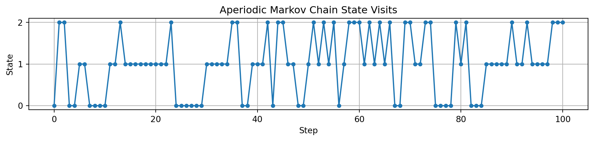
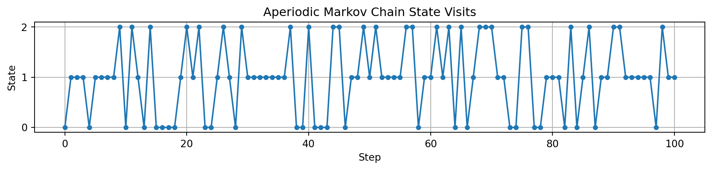

stateDiagram
[*] --> T1
[*] --> T2
[*] --> T3
T1 --> R1
T2 --> R1
T3 --> R2
R1 --> R2
R2 --> R1
R1 --> R1
R2 --> R2: 1
Unichain assumption
Visualization of a unichain Markov chain with transient states:
Explanation:
- States:
- T1, T2, T3: Transient states. The system may start in any of these states, but once it leaves, it doesn’t return.
- R1, R2: Recurrent states forming a single recurrent class. The system can transition between these states indefinitely.
- Transitions:
- Arrows indicate possible transitions between states.
- Transient states (T1, T2, T3) have transitions leading to the recurrent states (R1, R2).
- Recurrent states (R1, R2) have transitions between each other and to themselves, indicating the possibility of remaining in the same state.
Key Points:
- Unichain Property: The chain has a single recurrent class (R1 and R2) and includes transient states (T1, T2, T3).
- Transient States: Once the system leaves a transient state, it doesn’t return to it.
- Recurrent States: The system can cycle between R1 and R2 indefinitely, characteristic of a recurrent class.
This diagram illustrates a unichain Markov chain with transient states, where all paths eventually lead to the recurrent class, and within that class, the system can continue indefinitely.
Aperiodic and periodic Markov chains.
Understanding Aperiodic and Periodic Markov Chains
Aperiodic Markov Chain: A Markov chain is aperiodic if it’s possible to return to any state at irregular time steps. Formally, the greatest common divisor (gcd) of the lengths of all possible loops (returns to the same state) is 1.
Periodic Markov Chain: A Markov chain is periodic if returns to a state can only occur at multiples of some integer greater than 1. The gcd of the return times is greater than 1.
Example 1: Aperiodic Markov Chain
Let’s consider a simple three-state Markov chain where the states are 0, 1, and 2.
Transition Matrix
\[ P = \begin{pmatrix} 0.5 & 0.3 & 0.2 \\ 0.1 & 0.6 & 0.3 \\ 0.2 & 0.4 & 0.4 \\ \end{pmatrix} \]
- All transition probabilities are positive.
- It’s possible to stay in the same state or move to any other state in one step.
Example 2: Periodic Markov Chain
Consider a two-state Markov chain where the states alternate.
Transition Matrix
\[ P = \begin{pmatrix} 0 & 1 \\ 1 & 0 \\ \end{pmatrix} \]
- From state 0, you always move to state 1 in the next step.
- From state 1, you always move to state 0 in the next step.
- Returns to any state occur only at even time steps.
Python Implementation
Let’s simulate both chains and compare their behaviors.
Import Necessary Libraries
import numpy as np
import matplotlib.pyplot as pltDefine the Markov Chains
Aperiodic Chain
# States: 0, 1, 2
states_aperiodic = [0, 1, 2]
# Transition Probability Matrix
P_aperiodic = np.array([
[0.5, 0.3, 0.2],
[0.1, 0.6, 0.3],
[0.2, 0.4, 0.4]
])Periodic Chain
# States: 0, 1
states_periodic = [0, 1]
# Transition Probability Matrix
P_periodic = np.array([
[0, 1],
[1, 0]
])Simulation Function
We’ll define a function to simulate the Markov chain over a number of steps.
def simulate_markov_chain(P, states, start_state, num_steps):
state = start_state
state_history = [state]
for _ in range(num_steps):
state = np.random.choice(states, p=P[state])
state_history.append(state)
return state_historySimulate the Chains
Parameters
num_steps = 100
start_state_aperiodic = 0
start_state_periodic = 0Simulate Aperiodic Chain
history_aperiodic = simulate_markov_chain(
P_aperiodic, states_aperiodic, start_state_aperiodic, num_steps)Simulate Periodic Chain
history_periodic = simulate_markov_chain(
P_periodic, states_periodic, start_state_periodic, num_steps)Visualize the State Visits
Function to Plot State Visits
def plot_state_visits(state_history, title):
plt.figure(figsize=(12, 2))
plt.plot(state_history, 'o-', markersize=4)
plt.yticks(sorted(set(state_history)))
plt.xlabel('Step')
plt.ylabel('State')
plt.title(title)
plt.grid(True)
plt.show()Plot Aperiodic Chain
plot_state_visits(history_aperiodic, 'Aperiodic Markov Chain State Visits')
Plot Periodic Chain
plot_state_visits(history_periodic, 'Periodic Markov Chain State Visits')Compute State Return Times
We’ll compute the times at which the chain returns to the starting state.
Function to Compute Return Times
def compute_return_times(state_history, target_state):
return_times = []
last_visit = None
for idx, state in enumerate(state_history):
if state == target_state:
if last_visit is not None:
return_times.append(idx - last_visit)
last_visit = idx
return return_timesCompute and Display Return Times
# Aperiodic Chain
return_times_aperiodic = compute_return_times(history_aperiodic, start_state_aperiodic)
print("Aperiodic Chain Return Times:", return_times_aperiodic)
print("GCD of Return Times (Aperiodic):", np.gcd.reduce(return_times_aperiodic))
# Periodic Chain
return_times_periodic = compute_return_times(history_periodic, start_state_periodic)
print("Periodic Chain Return Times:", return_times_periodic)
print("GCD of Return Times (Periodic):", np.gcd.reduce(return_times_periodic))Aperiodic Chain Return Times: [1, 22, 1, 5, 1, 5, 1, 48, 1, 2, 1, 5, 1, 1]
GCD of Return Times (Aperiodic): 1
Periodic Chain Return Times: [2, 2, 2, 2, 2, 2, 2, 2, 2, 2, 2, 2, 2, 2, 2, 2, 2, 2, 2, 2, 2, 2, 2, 2, 2, 2, 2, 2, 2, 2, 2, 2, 2, 2, 2, 2, 2, 2, 2, 2, 2, 2, 2, 2, 2, 2, 2, 2, 2, 2]
GCD of Return Times (Periodic): 2Results and Explanation
Aperiodic Markov Chain
State Visits Plot:
The plot shows that the chain moves between states 0, 1, and 2 without any regular pattern.
Return Times:
The return times to the starting state are irregular, and their gcd is typically 1, indicating aperiodicity.
Periodic Markov Chain
State Visits Plot:
The plot shows an alternating pattern between states 0 and 1.
Return Times:
The return times to the starting state are consistently 2, 4, 6, etc. The gcd of these times is 2, indicating periodicity with period 2.
Complete Code
Here’s the complete code assembled together:
import numpy as np
import matplotlib.pyplot as plt
# Aperiodic Markov Chain
states_aperiodic = [0, 1, 2]
P_aperiodic = np.array([
[0.5, 0.3, 0.2],
[0.1, 0.6, 0.3],
[0.2, 0.4, 0.4]
])
# Periodic Markov Chain
states_periodic = [0, 1]
P_periodic = np.array([
[0, 1],
[1, 0]
])
def simulate_markov_chain(P, states, start_state, num_steps):
state = start_state
state_history = [state]
for _ in range(num_steps):
state = np.random.choice(states, p=P[state])
state_history.append(state)
return state_history
def plot_state_visits(state_history, title):
plt.figure(figsize=(12, 2))
plt.plot(state_history, 'o-', markersize=4)
plt.yticks(sorted(set(state_history)))
plt.xlabel('Step')
plt.ylabel('State')
plt.title(title)
plt.grid(True)
plt.show()
def compute_return_times(state_history, target_state):
return_times = []
last_visit = None
for idx, state in enumerate(state_history):
if state == target_state:
if last_visit is not None:
return_times.append(idx - last_visit)
last_visit = idx
return return_times
# Simulation Parameters
num_steps = 100
start_state_aperiodic = 0
start_state_periodic = 0
# Simulate Chains
history_aperiodic = simulate_markov_chain(
P_aperiodic, states_aperiodic, start_state_aperiodic, num_steps)
history_periodic = simulate_markov_chain(
P_periodic, states_periodic, start_state_periodic, num_steps)
# Plot State Visits
plot_state_visits(history_aperiodic, 'Aperiodic Markov Chain State Visits')
plot_state_visits(history_periodic, 'Periodic Markov Chain State Visits')
# Compute Return Times
return_times_aperiodic = compute_return_times(history_aperiodic, start_state_aperiodic)
return_times_periodic = compute_return_times(history_periodic, start_state_periodic)
# Display Return Times and GCD
print("Aperiodic Chain Return Times:", return_times_aperiodic)
if return_times_aperiodic:
gcd_aperiodic = np.gcd.reduce(return_times_aperiodic)
print("GCD of Return Times (Aperiodic):", gcd_aperiodic)
else:
print("No returns to starting state in aperiodic chain.")
print("\nPeriodic Chain Return Times:", return_times_periodic)
if return_times_periodic:
gcd_periodic = np.gcd.reduce(return_times_periodic)
print("GCD of Return Times (Periodic):", gcd_periodic)
else:
print("No returns to starting state in periodic chain.")

Aperiodic Chain Return Times: [2, 15, 16, 2, 1, 1, 1, 1, 1, 1, 1, 1, 11, 1, 1, 1, 6, 13, 1, 1, 6, 4, 2, 1, 1]
GCD of Return Times (Aperiodic): 1
Periodic Chain Return Times: [2, 2, 2, 2, 2, 2, 2, 2, 2, 2, 2, 2, 2, 2, 2, 2, 2, 2, 2, 2, 2, 2, 2, 2, 2, 2, 2, 2, 2, 2, 2, 2, 2, 2, 2, 2, 2, 2, 2, 2, 2, 2, 2, 2, 2, 2, 2, 2, 2, 2]
GCD of Return Times (Periodic): 2Interpreting the Output
Aperiodic Chain
Return Times: The return times will vary and are not all multiples of a number greater than 1.
GCD: The gcd of the return times is typically 1, confirming aperiodicity.
Periodic Chain
Return Times: The return times are consistent and multiples of 2.
GCD: The gcd of the return times is 2, indicating the chain has a period of 2.
Conclusion
By simulating both chains, we observe:
Aperiodic Chain: The chain does not exhibit a fixed cyclic pattern. The state can be revisited at irregular time intervals.
Periodic Chain: The chain exhibits a fixed cycle, returning to the starting state at regular intervals (every 2 steps).
This simulation helps visualize the difference between aperiodic and periodic Markov chains. In the context of Markov Decision Processes (MDPs), ensuring that the chain is aperiodic is important for the convergence of algorithms and the validity of certain theoretical results, such as the unichain assumption.
import numpy as np
import pandas as pd
from scipy.stats import poisson
# Parameters
max_jobs = 8
service_rates = [0, 1, 2]
# Define Poisson arrival probabilities
arrival_rate = 1.5
arrival_probs = {k: poisson.pmf(k, arrival_rate) for k in range(3)}
# Define departure probabilities based on service rate
# For each rate b, f_b(n) where n is the number of completions
departure_probs = {
0: {1: 0.8, 2: 0.2},
1: {1: 0.5, 2: 0.5},
2: {1: 0.2, 2: 0.8}
}
# Define the states as (jobs, service rate)
states = [(x, b) for x in range(max_jobs + 1) for b in service_rates]
# Transition probability dictionary
transition_matrix = []
# Calculate transition probabilities
for (x, b) in states:
for (x_next, b_next) in states:
# Calculate transition probability from (x, b) to (x_next, b_next)
prob = 0
for arrivals, p_arrival in arrival_probs.items():
for completions, p_departure in departure_probs[b].items():
jobs_after_arrivals = min(x + arrivals, max_jobs)
jobs_after_departures = max(jobs_after_arrivals - completions, 0)
if jobs_after_departures == x_next and b == b_next:
prob += p_arrival * p_departure
# Store the transition with probability > 0
if prob > 0:
transition_matrix.append({
"from_state": (x, b),
"to_state": (x_next, b_next),
"probability": prob
})
# Convert transition matrix to a DataFrame for better readability
transition_df = pd.DataFrame(transition_matrix)
transition_df = transition_df.sort_values(by=["from_state", "to_state"]).reset_index(drop=True)
transition_df| from_state | to_state | probability | |
|---|---|---|---|
| 0 | (0, 0) | (0, 0) | 0.608030 |
| 1 | (0, 0) | (1, 0) | 0.200817 |
| 2 | (0, 1) | (0, 1) | 0.683336 |
| 3 | (0, 1) | (1, 1) | 0.125511 |
| 4 | (0, 2) | (0, 2) | 0.758643 |
| ... | ... | ... | ... |
| 85 | (8, 0) | (7, 0) | 0.647077 |
| 86 | (8, 1) | (6, 1) | 0.404423 |
| 87 | (8, 1) | (7, 1) | 0.404423 |
| 88 | (8, 2) | (6, 2) | 0.647077 |
| 89 | (8, 2) | (7, 2) | 0.161769 |
90 rows × 3 columns
def generate_mermaid_chart(df, max_states=None):
"""
Generate Mermaid code for a Markov chain state diagram from a transition DataFrame.
Parameters:
- df: DataFrame containing transitions with columns "from_state", "to_state", and "probability".
- max_states: Optional integer to limit the number of states included in the diagram.
Returns:
- Mermaid syntax as a string.
"""
# Limit the number of states if max_states is set
if max_states:
unique_states = pd.concat([df['from_state'], df['to_state']]).unique()[:max_states]
df = df[df['from_state'].isin(unique_states) & df['to_state'].isin(unique_states)]
# Begin building the Mermaid syntax
mermaid_code = "stateDiagram-v2\n"
# Loop through the DataFrame to add transitions
for _, row in df.iterrows():
from_state = row["from_state"]
to_state = row["to_state"]
probability = row["probability"]
# Format states and add transition with probability
mermaid_code += f' "{from_state}" --> "{to_state}": {probability:.2f}\n'
return mermaid_code
# Generate the Mermaid code for all states (or limit with max_states for readability)
mermaid_code = generate_mermaid_chart(transition_df)
print(mermaid_code)stateDiagram-v2
"(0, 0)" --> "(0, 0)": 0.61
"(0, 0)" --> "(1, 0)": 0.20
"(0, 1)" --> "(0, 1)": 0.68
"(0, 1)" --> "(1, 1)": 0.13
"(0, 2)" --> "(0, 2)": 0.76
"(0, 2)" --> "(1, 2)": 0.05
"(1, 0)" --> "(0, 0)": 0.29
"(1, 0)" --> "(1, 0)": 0.32
"(1, 0)" --> "(2, 0)": 0.20
"(1, 1)" --> "(0, 1)": 0.39
"(1, 1)" --> "(1, 1)": 0.29
"(1, 1)" --> "(2, 1)": 0.13
"(1, 2)" --> "(0, 2)": 0.49
"(1, 2)" --> "(1, 2)": 0.27
"(1, 2)" --> "(2, 2)": 0.05
"(2, 0)" --> "(0, 0)": 0.04
"(2, 0)" --> "(1, 0)": 0.25
"(2, 0)" --> "(2, 0)": 0.32
"(2, 0)" --> "(3, 0)": 0.20
"(2, 1)" --> "(0, 1)": 0.11
"(2, 1)" --> "(1, 1)": 0.28
"(2, 1)" --> "(2, 1)": 0.29
"(2, 1)" --> "(3, 1)": 0.13
"(2, 2)" --> "(0, 2)": 0.18
"(2, 2)" --> "(1, 2)": 0.31
"(2, 2)" --> "(2, 2)": 0.27
"(2, 2)" --> "(3, 2)": 0.05
"(3, 0)" --> "(1, 0)": 0.04
"(3, 0)" --> "(2, 0)": 0.25
"(3, 0)" --> "(3, 0)": 0.32
"(3, 0)" --> "(4, 0)": 0.20
"(3, 1)" --> "(1, 1)": 0.11
"(3, 1)" --> "(2, 1)": 0.28
"(3, 1)" --> "(3, 1)": 0.29
"(3, 1)" --> "(4, 1)": 0.13
"(3, 2)" --> "(1, 2)": 0.18
"(3, 2)" --> "(2, 2)": 0.31
"(3, 2)" --> "(3, 2)": 0.27
"(3, 2)" --> "(4, 2)": 0.05
"(4, 0)" --> "(2, 0)": 0.04
"(4, 0)" --> "(3, 0)": 0.25
"(4, 0)" --> "(4, 0)": 0.32
"(4, 0)" --> "(5, 0)": 0.20
"(4, 1)" --> "(2, 1)": 0.11
"(4, 1)" --> "(3, 1)": 0.28
"(4, 1)" --> "(4, 1)": 0.29
"(4, 1)" --> "(5, 1)": 0.13
"(4, 2)" --> "(2, 2)": 0.18
"(4, 2)" --> "(3, 2)": 0.31
"(4, 2)" --> "(4, 2)": 0.27
"(4, 2)" --> "(5, 2)": 0.05
"(5, 0)" --> "(3, 0)": 0.04
"(5, 0)" --> "(4, 0)": 0.25
"(5, 0)" --> "(5, 0)": 0.32
"(5, 0)" --> "(6, 0)": 0.20
"(5, 1)" --> "(3, 1)": 0.11
"(5, 1)" --> "(4, 1)": 0.28
"(5, 1)" --> "(5, 1)": 0.29
"(5, 1)" --> "(6, 1)": 0.13
"(5, 2)" --> "(3, 2)": 0.18
"(5, 2)" --> "(4, 2)": 0.31
"(5, 2)" --> "(5, 2)": 0.27
"(5, 2)" --> "(6, 2)": 0.05
"(6, 0)" --> "(4, 0)": 0.04
"(6, 0)" --> "(5, 0)": 0.25
"(6, 0)" --> "(6, 0)": 0.32
"(6, 0)" --> "(7, 0)": 0.20
"(6, 1)" --> "(4, 1)": 0.11
"(6, 1)" --> "(5, 1)": 0.28
"(6, 1)" --> "(6, 1)": 0.29
"(6, 1)" --> "(7, 1)": 0.13
"(6, 2)" --> "(4, 2)": 0.18
"(6, 2)" --> "(5, 2)": 0.31
"(6, 2)" --> "(6, 2)": 0.27
"(6, 2)" --> "(7, 2)": 0.05
"(7, 0)" --> "(5, 0)": 0.04
"(7, 0)" --> "(6, 0)": 0.30
"(7, 0)" --> "(7, 0)": 0.47
"(7, 1)" --> "(5, 1)": 0.11
"(7, 1)" --> "(6, 1)": 0.40
"(7, 1)" --> "(7, 1)": 0.29
"(7, 2)" --> "(5, 2)": 0.18
"(7, 2)" --> "(6, 2)": 0.51
"(7, 2)" --> "(7, 2)": 0.12
"(8, 0)" --> "(6, 0)": 0.16
"(8, 0)" --> "(7, 0)": 0.65
"(8, 1)" --> "(6, 1)": 0.40
"(8, 1)" --> "(7, 1)": 0.40
"(8, 2)" --> "(6, 2)": 0.65
"(8, 2)" --> "(7, 2)": 0.16
stateDiagram
"(0, 0)" --> "(0, 0)": 0.61
"(0, 0)" --> "(1, 0)": 0.20
"(0, 1)" --> "(0, 1)": 0.68
"(0, 1)" --> "(1, 1)": 0.13
"(0, 2)" --> "(0, 2)": 0.76
"(0, 2)" --> "(1, 2)": 0.05
"(1, 0)" --> "(0, 0)": 0.29
"(1, 0)" --> "(1, 0)": 0.32
"(1, 0)" --> "(2, 0)": 0.20
"(1, 1)" --> "(0, 1)": 0.39
"(1, 1)" --> "(1, 1)": 0.29
"(1, 1)" --> "(2, 1)": 0.13
"(1, 2)" --> "(0, 2)": 0.49
"(1, 2)" --> "(1, 2)": 0.27
"(1, 2)" --> "(2, 2)": 0.05
"(2, 0)" --> "(0, 0)": 0.04
"(2, 0)" --> "(1, 0)": 0.25
"(2, 0)" --> "(2, 0)": 0.32
"(2, 0)" --> "(3, 0)": 0.20
"(2, 1)" --> "(0, 1)": 0.11
"(2, 1)" --> "(1, 1)": 0.28
"(2, 1)" --> "(2, 1)": 0.29
"(2, 1)" --> "(3, 1)": 0.13
"(2, 2)" --> "(0, 2)": 0.18
"(2, 2)" --> "(1, 2)": 0.31
"(2, 2)" --> "(2, 2)": 0.27
"(2, 2)" --> "(3, 2)": 0.05
"(3, 0)" --> "(1, 0)": 0.04
"(3, 0)" --> "(2, 0)": 0.25
"(3, 0)" --> "(3, 0)": 0.32
"(3, 0)" --> "(4, 0)": 0.20
"(3, 1)" --> "(1, 1)": 0.11
"(3, 1)" --> "(2, 1)": 0.28
"(3, 1)" --> "(3, 1)": 0.29
"(3, 1)" --> "(4, 1)": 0.13
"(3, 2)" --> "(1, 2)": 0.18
"(3, 2)" --> "(2, 2)": 0.31
"(3, 2)" --> "(3, 2)": 0.27
"(3, 2)" --> "(4, 2)": 0.05
"(4, 0)" --> "(2, 0)": 0.04
"(4, 0)" --> "(3, 0)": 0.25
"(4, 0)" --> "(4, 0)": 0.32
"(4, 0)" --> "(5, 0)": 0.20
"(4, 1)" --> "(2, 1)": 0.11
"(4, 1)" --> "(3, 1)": 0.28
"(4, 1)" --> "(4, 1)": 0.29
"(4, 1)" --> "(5, 1)": 0.13
"(4, 2)" --> "(2, 2)": 0.18
"(4, 2)" --> "(3, 2)": 0.31
"(4, 2)" --> "(4, 2)": 0.27
"(4, 2)" --> "(5, 2)": 0.05
"(5, 0)" --> "(3, 0)": 0.04
"(5, 0)" --> "(4, 0)": 0.25
"(5, 0)" --> "(5, 0)": 0.32
"(5, 0)" --> "(6, 0)": 0.20
"(5, 1)" --> "(3, 1)": 0.11
"(5, 1)" --> "(4, 1)": 0.28
"(5, 1)" --> "(5, 1)": 0.29
"(5, 1)" --> "(6, 1)": 0.13
"(5, 2)" --> "(3, 2)": 0.18
"(5, 2)" --> "(4, 2)": 0.31
"(5, 2)" --> "(5, 2)": 0.27
"(5, 2)" --> "(6, 2)": 0.05
"(6, 0)" --> "(4, 0)": 0.04
"(6, 0)" --> "(5, 0)": 0.25
"(6, 0)" --> "(6, 0)": 0.32
"(6, 0)" --> "(7, 0)": 0.20
"(6, 1)" --> "(4, 1)": 0.11
"(6, 1)" --> "(5, 1)": 0.28
"(6, 1)" --> "(6, 1)": 0.29
"(6, 1)" --> "(7, 1)": 0.13
"(6, 2)" --> "(4, 2)": 0.18
"(6, 2)" --> "(5, 2)": 0.31
"(6, 2)" --> "(6, 2)": 0.27
"(6, 2)" --> "(7, 2)": 0.05
"(7, 0)" --> "(5, 0)": 0.04
"(7, 0)" --> "(6, 0)": 0.30
"(7, 0)" --> "(7, 0)": 0.47
"(7, 1)" --> "(5, 1)": 0.11
"(7, 1)" --> "(6, 1)": 0.40
"(7, 1)" --> "(7, 1)": 0.29
"(7, 2)" --> "(5, 2)": 0.18
"(7, 2)" --> "(6, 2)": 0.51
"(7, 2)" --> "(7, 2)": 0.12
"(8, 0)" --> "(6, 0)": 0.16
"(8, 0)" --> "(7, 0)": 0.65
"(8, 1)" --> "(6, 1)": 0.40
"(8, 1)" --> "(7, 1)": 0.40
"(8, 2)" --> "(6, 2)": 0.65
"(8, 2)" --> "(7, 2)": 0.16